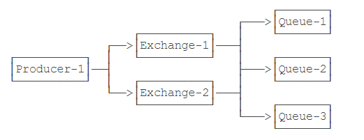

Spring Boot
基础
1，文件结构

Spring Boot默认的配置文件采用YAML格式而不是
.properties格式，文件名必须是application.yml而不是其他名称。YAML是一种层级格式，去掉了大量重复的前缀，并且更加易读。YAML可以读取环境变量：
${DB_HOST:localhost}，首先从环境变量查找DB_HOST，如果环境变量定义了，那么使用环境变量的值，否则，使用默认值localhost。实际线上运行的时候只需要传入环境变量即可:java -jar xxx.jar -DB_HOST=10.0.1.123 --DB_USER=prod --DB_PASSWORD=xxxx1spring2application3name$APP_NAMEunnamed4datasource5urljdbchsqldbfiletestdblogback-spring.xml是Spring Boot的logback配置文件名称
static是静态文件目录，templates是模板文件目录，注意它们不再存放在src/main/webapp下，而是直接放到src/main/resources这个classpath目录，因为在Spring Boot中已经不需要专门的webapp目录了。在存放源码的
src/main/java目录中，Spring Boot要求main()方法所在的启动类必须放到根package下，命名不做要求。启动Spring Boot应用程序需要加上注解
@SpringBootApplication，该注解实际上又包含了：@SpringBootConfiguration,@EnableAutoConfiguration,@ComponentScan，相当于启动了自动配置和自动扫描。xxxxxxxxxx612public class Application {3public static void main(String[] args) throws Exception {4SpringApplication.run(Application.class, args);5}6}pom.xml为maven配置文件，使用Spring Boot时，推荐从
spring-boot-starter-parent继承，因为这样就可以引入Spring Boot的预置配置。Spring包含的组件无需指定版本号，因为引入的<parent>内已经指定了，只有自己引入的某些第三方jar包需要指定版本号。定义的数据源、声明式事务、JdbcTemplate，通过AutoConfiguration可以直接注入到自己编写的
Service中，无需手动处理。1，当引入
spring-boot-starter-jdbc时，启动时会自动扫描所有的XxxAutoConfiguration：DataSourceAutoConfiguration：自动创建一个DataSource，其中配置项从application.yml的spring.datasource读取；DataSourceTransactionManagerAutoConfiguration：自动创建了一个基于JDBC的事务管理器；JdbcTemplateAutoConfiguration：自动创建了一个JdbcTemplate。
2，当引入
spring-boot-starter-web时，自动创建了：ServletWebServerFactoryAutoConfiguration：自动创建一个嵌入式Web服务器，默认是Tomcat；DispatcherServletAutoConfiguration：自动创建一个DispatcherServlet；HttpEncodingAutoConfiguration：自动创建一个CharacterEncodingFilter；WebMvcAutoConfiguration：自动创建若干与MVC相关的Bean。- ...
3，当引入第三方
pebble-spring-boot-starter时，自动创建了：PebbleAutoConfiguration：自动创建了一个PebbleViewResolver。
Spring Boot大量使用
XxxAutoConfiguration来使得许多组件被自动化配置并创建，而这些创建过程又大量使用了Spring的Conditional功能。在不同场景下通过Conditional判断当前环境是否满足当前XxxAutoConfiguration的运行条件，满足则启动自动装配。Spring Boot自动装配功能是通过自动扫描+条件装配实现的，这一套机制在默认情况下工作得很好，但是，如果要手动控制某个Bean的创建，就需要详细地了解Spring Boot自动创建的原理，很多时候还要跟踪XxxAutoConfiguration，以便设定条件使得某个Bean不会被自动创建。
开发工具
1，Spring Boot提供了一个开发者工具，可以监控classpath路径上的文件。只要源码或配置文件发生修改，Spring Boot应用可以自动重启。默认配置下，针对/static、/public和/templates目录中的文件修改，不会自动重启，因为禁用缓存后，这些文件的修改可以实时更新。
xxxxxxxxxx41<dependency>2 <groupId>org.springframework.boot</groupId>3 <artifactId>spring-boot-devtools</artifactId>4</dependency>2，打包软件
pom.xml配置
xxxxxxxxxx91<build>2 <finalName>MyAppName</finalName>3 <plugins>4 <plugin>5 <groupId>org.springframework.boot</groupId>6 <artifactId>spring-boot-maven-plugin</artifactId>7 </plugin>8 </plugins>9</build>执行以下Maven命令即可打包：
xxxxxxxxxx11$ mvn clean package
打包后可以在target目录下可以看到两个jar文件：MyAppName.jar.original是Maven标准打包插件打的jar包，它只包含自己的Class，不包含依赖，而MyAppName.jar是Spring Boot打包插件创建的包含依赖的jar，可以直接运行：java -jar MyAppName.jar
2，使用spring-boot-thin-launcher只打包自己编写的代码，同时又自动把依赖包下载到某处，并自动引入到classpath中。解决打包文件臃肿的问题。
xxxxxxxxxx161<build>2 <finalName>MyAppName</finalName>3 <plugins>4 <plugin>5 <groupId>org.springframework.boot</groupId>6 <artifactId>spring-boot-maven-plugin</artifactId>7 <dependencies>8 <dependency>9 <groupId>org.springframework.boot.experimental</groupId>10 <artifactId>spring-boot-thin-layout</artifactId>11 <version>1.0.27.RELEASE</version>12 </dependency>13 </dependencies>14 </plugin>15 </plugins>16</build>直接运行java -jar MyAppName.jar，效果和未删减依赖完全一样。实际上spring-boot-thin-launcher这个插件改变了spring-boot-maven-plugin的默认行为。它输出的jar包只包含我们自己代码编译后的class，一个很小的ThinJarWrapper，以及解析pom.xml后得到的所有依赖jar的列表。运行的时候，入口实际上是ThinJarWrapper，它会先在指定目录搜索看看依赖的jar包是否都存在，如果不存在，先从Maven中央仓库下载到本地，然后，再执行我们自己编写的main()入口方法。
spring-boot-thin-launcher在启动时搜索的默认目录是用户主目录的.m2，也可以指定下载目录，将下载目录指定为当前目录：`$ java -Dthin.root=. -jar MyAppName.jar。通过环境变量thin.root传入当前目录，执行后发现当前目录下自动生成了一个repository目录，它仅包含MyAppName.jar所需的运行期依赖项。
第一次在服务器上运行MyAppName.jar时，仍需要从Maven中央仓库下载大量的jar包，`spring-boot-thin-launcher还提供了一个dryrun选项，专门用来下载依赖项而不执行实际代码：java -Dthin.dryrun=true -Dthin.root=. -jar MyAppName.jar，执行上述代码会在当前目录创建repository目录，并下载所有依赖项，但并不会运行我们编写的main()方法。此过程称之为“预热”（warm up）。如果服务器由于安全限制不允许从外网下载文件，那么可以在本地预热，然后把MyAppName.jar和repository目录上传到服务器。只要依赖项没有变化，后续改动只需要上传MyAppName.jar即可。
Actuator
1，使用JMX需要把一些监控信息以MBean的形式暴露给JMX Server，而Spring Boot已经内置了一个监控功能，它叫Actuator。
2，依赖：
xxxxxxxxxx41<dependency>2 <groupId>org.springframework.boot</groupId>3 <artifactId>spring-boot-starter-actuator</artifactId>4</dependency>3，然后正常启动应用程序，Actuator会把它能收集到的所有信息都暴露给JMX。此外，Actuator还可以通过URL/actuator/挂载一些监控点，http://localhost:8080/actuator/health，可以查看应用程序当前状态，用于探测后端集群应用是否存活。Actuator默认把所有访问点暴露给JMX，但处于安全原因，只有health和info会暴露给Web。要暴露更多的访问点给Web，需要在application.yml中加上配置,要特别注意暴露的URL的安全性
xxxxxxxxxx51management2 endpoints3 web4 exposure5 includeinfo, health, beans, env, metricsProfiles
1，Profile表示一个环境的概念，如开发、测试和生产这3个环境：native，test，production。在启动一个Spring应用程序的时候，可以传入一个或多个环境：java -Dspring.profiles.active=test -jar MyApp.jar，如果不指定就就是用默认配置。
2，Spring Boot可以在application.yml中为每个环境进行配置。
x1spring2 application3 name$APP_NAMEunnamed4 datasource5 urljdbchsqldbfiletestdb6 usernamesa7 password8 dirver-class-nameorg.hsqldb.jdbc.JDBCDriver9 hikari10 auto-commitfalse11 connection-timeout300012 validation-timeout300013 max-lifetime6000014 maximum-pool-size2015 minimum-idle116
17pebble18 suffix19 cachefalse20
21server22 port$APP_PORT808023
24---25
26spring27 profilestest28
29server30 port800031
32---33
34spring35 profilesproduction36
37server38 port8039
40pebble41 cachetrue不同环境类型用分隔符---分离，最前面的配置是默认配置，不需要指定Profile，后面的每段配置都必须以spring.profiles: xxx开头，表示一个Profile。非默认值配置只是修改申明的项，其余的沿用默认配置。
3，Spring Boot可以在通过@Profile()为JavaBean指明类型，根据环境类型，创建不同的JavaBean
xxxxxxxxxx61public interface StorageService {2 // 根据URI打开InputStream:3 InputStream openInputStream(String uri) throws IOException;4 // 根据扩展名+InputStream保存并返回URI:5 String store(String extName, InputStream input) throws IOException;6}xxxxxxxxxx211// 默认启用本地存储实现3("default")4public class LocalStorageService implements StorageService {5 ("${storage.local:/var/static}")6 String localStorageRootDir;7 private File localStorageRoot;8
9 10 public void init() {11 doSomething();12 }13 14 public InputStream openInputStream(String uri) throws IOException {15 doSomething();16 }17 18 public String store(String extName, InputStream input) throws IOException {19 doSomething();20 }21}xxxxxxxxxx251// 非默认使用云端存储3("!default")4public class CloudStorageService implements StorageService {5 ("${storage.cloud.bucket:}")6 String bucket;7 ("${storage.cloud.access-key:}")8 String accessKey;9 ("${storage.cloud.access-secret:}")10 String accessSecret;11
12 13 public void init() {14 doSomething();15 }16 17 public InputStream openInputStream(String uri) throws IOException {18 doSomething();19 }20 21 public String store(String extName, InputStream input) throws IOException {22 doSomething();23 }24}25
自动装配
xxxxxxxxxx21StorageService storageServiceConditional
1，Profile能根据不同的Profile进行条件装配，但是Profile控制比较糙，如果想要精细控制可以使用原生的条件装配@Conditional，但是要自己编写比较复杂的Condition来做判断；也可以使用Spring Boot准备好了几个非常有用的条件：
@ConditionalOnProperty：从application.yml读取配置，如果有指定的配置，条件生效；
@ConditionalOnProperty(value = "storage.type", havingValue = "local", matchIfMissing = true)@ConditionalOnBean：如果有指定的Bean，条件生效；
@ConditionalOnMissingBean：如果没有指定的Bean，条件生效；
@ConditionalOnMissingClass：如果没有指定的Class，条件生效；
@ConditionalOnWebApplication：在Web环境中条件生效；
@ConditionalOnExpression：根据表达式判断条件是否生效。
加载配置文件
1，载配置文件可以直接使用注解@Value，在不同文件多次引用同一个@Value不但麻烦，而且@Value使用字符串，缺少编译器检查，容易造成多处引用不一致。
Spring Boot允许创建一个Bean，持有一组配置，并由Spring Boot自动注入。
xxxxxxxxxx111# YAML配置2storage3 local4 # 文件存储根目录:5 root-dir$STORAGE_LOCAL_ROOT/var/storage6 # 最大文件大小，默认100K:7 max-size$STORAGE_LOCAL_MAX_SIZE1024008 # 是否允许空文件:9 allow-emptyfalse10 # 允许的文件类型:11 allow-typesjpg, png, gifxxxxxxxxxx131// 定义一个Java Bean，持有该组配置。2// Configuration表面StorageConfiguration也是一个Spring管理的Bean，可直接注入到其他Bean中3// 表示将从配置项storage.local读取该项的所有子项配置5("storage.local")6public class StorageConfiguration {7 //保证Java Bean的属性名称与配置一致:YAML单词全小写，用‘-’连接，Java变量名采用驼峰命名。8 private String rootDir;9 private int maxSize;10 private boolean allowEmpty;11 private List<String> allowTypes;12 // TODO: getters and setters13}xxxxxxxxxx61public class StorageService {3 // 注入到其他Bean中,因为只需要注入StorageConfiguration这个Bean，这样可以由编译器检查类型，无需编写重复的@Value注解4 5 StorageConfiguration storageConfig;6}禁用自动配置
1，用exclude指定需要关掉的自动配置，需要手动创建需要的组件，如果未添加@Configuration和@Component，要使之生效，可以使用@Import导入到IOC容器。
xxxxxxxxxx81// 启动自动配置，但排除指定的自动配置:3(exclude = DataSourceAutoConfiguration.class)4// 手动注入手动创建的组件到IOC容器5({ MasterDataSourceConfiguration.class, SlaveDataSourceConfiguration.class})6public class Application {7 ...8}Filter
1，Spring Boot会自动扫描所有的FilterRegistrationBean类型的Bean，然后，将它们返回的Filter自动注册到Servlet容器中，无需任何配置。
FilterRegistrationBean本身不是Filter，它实际上是Filter的工厂。Spring Boot会调用getFilter()，把返回的Filter注册到Servlet容器中。因为我们可以在FilterRegistrationBean中注入需要的资源，然后，在返回的AuthFilter中，这个内部类可以引用外部类的所有字段（闭包），整个过程完全基于Spring的IoC容器完成。
xxxxxxxxxx161// 给多个Filter排序，数字小的在前面2(10)3public class AuthFilterRegistrationBean extends FilterRegistrationBean<Filter> {5 6 UserService userService;7
8 9 public Filter getFilter() {10 return new AuthFilter();11 }12
13 class AuthFilter implements Filter {14 ...15 }16}xxxxxxxxxx141(20)2public class ApiFilterRegistrationBean extends FilterRegistrationBean<Filter> {4 // 在@PostConstruct方法中，通过setFilter()设置一个Filter实例后，再调用setUrlPatterns()传入要过滤的URL列表。5 6 public void init() {7 setFilter(new ApiFilter());8 setUrlPatterns(List.of("/api/*"));9 }10
11 class ApiFilter implements Filter {12 ...13 }14}Open API
1，Open API是一个标准，它的主要作用是描述REST API，既可以作为文档给开发者阅读，又可以让机器根据这个文档自动生成客户端代码等。
2，在pom.xml中加入以下依赖，自动扫描@RestController标注的Controller，生成URL对应的方法的文档，在http://localhost:8080/swagger-ui.html访问。
xxxxxxxxxx11org.springdoc:springdoc-openapi-ui:1.4.03，给API加入一些描述信息,用于生成API文档的描述信息，该API文档总是和代码保持同步，大大简化了文档的编写工作。
xxxxxxxxxx71// @Operation可以对API进行描述2(summary = "Get specific user object by it's id.")3("/users/{id}")4// @Parameter可以对参数进行描述5public User user((description = "id of the user.") ("id") long id) {6 return userService.getUserById(id);7}RabbitMQ
1，AMQP是一种使用广泛的独立于语言的消息协议，它的全称是Advanced Message Queuing Protocol，即高级消息队列协议，它定义了一种二进制格式的消息流，任何编程语言都可以实现该协议。
2，MQP协议只有Queue，没有Topic，并且引入了Exchange的概念。当Producer想要发送消息的时候，它将消息发送给Exchange，由Exchange将消息根据各种规则投递到一个或多个Queue。
如果某个Exchange总是把消息发送到固定的Queue，那么这个消息通道就相当于JMS的Queue。如果某个Exchange把消息发送到多个Queue，那么这个消息通道就相当于JMS的Topic。和JMS的Topic相比，Exchange的投递规则更灵活，路由规则称之为Binding，通常都在RabbitMQ的管理后台设置，在传递消息时指定Routing Key，RabbitMQ根据对应exchange设定的规则将消息发送到指定的Queue。
要实现一对多的投递就必须自己配置Exchange。直接指定一个Queue并投递消息也是可以的，此时指定Routing Key为Queue的名称即可，因为RabbitMQ提供了一个default exchange用于根据Routing Key查找Queue并直接投递消息到指定的Queue。
